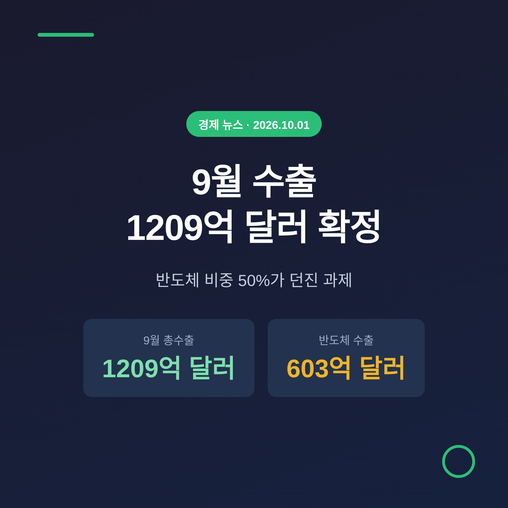
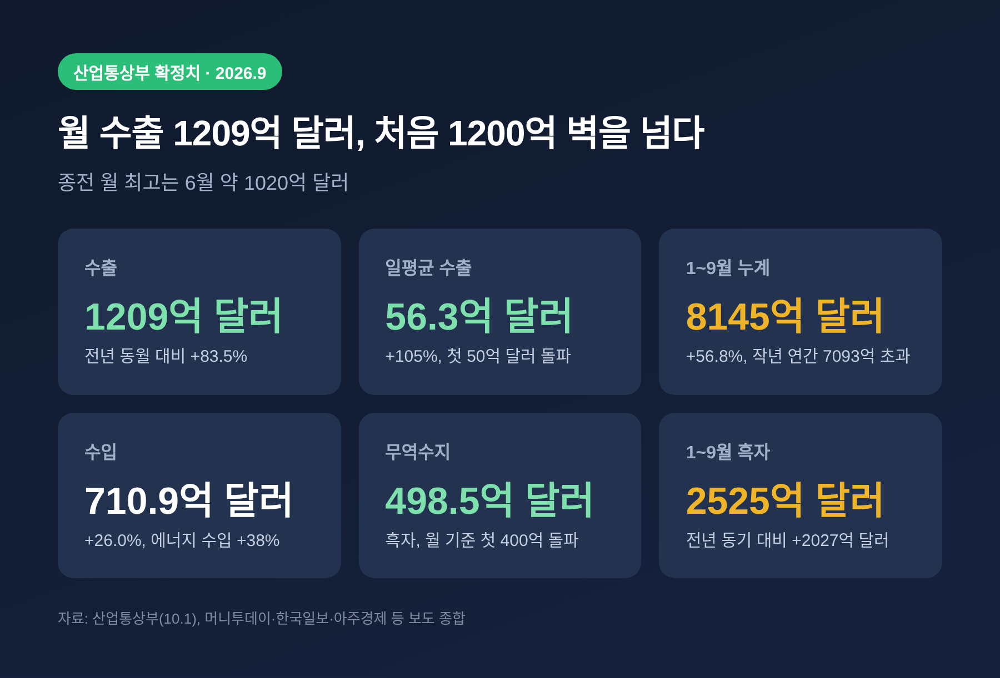
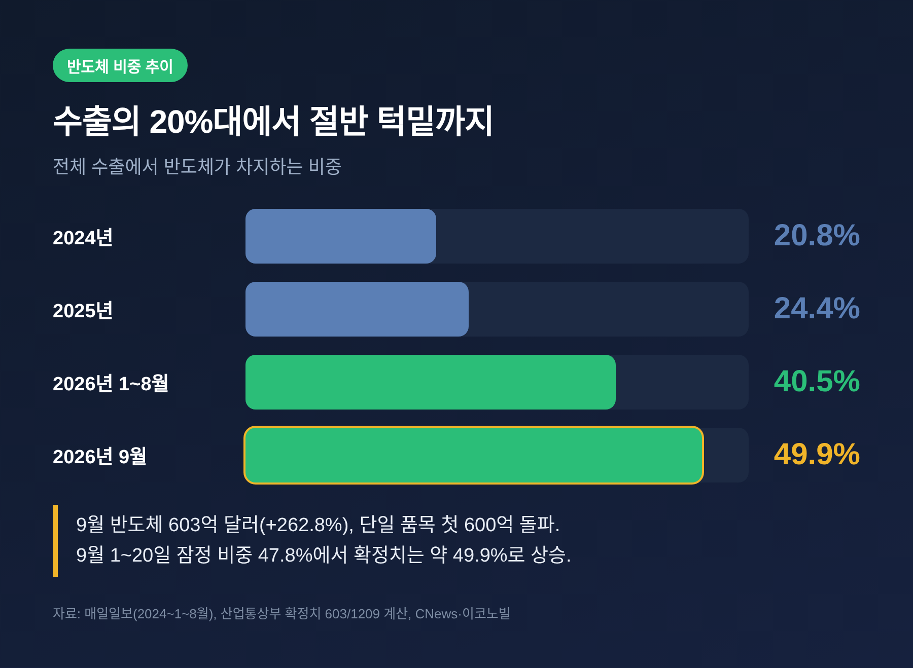
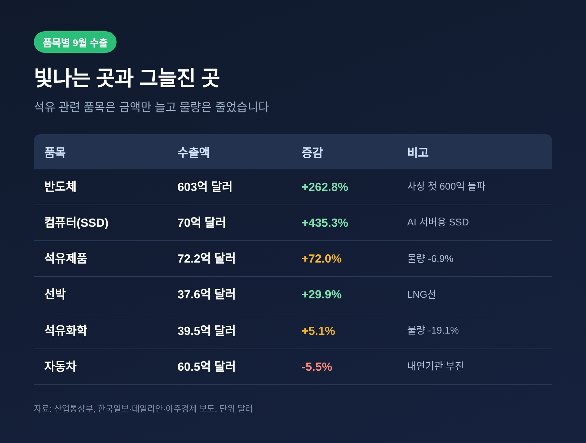
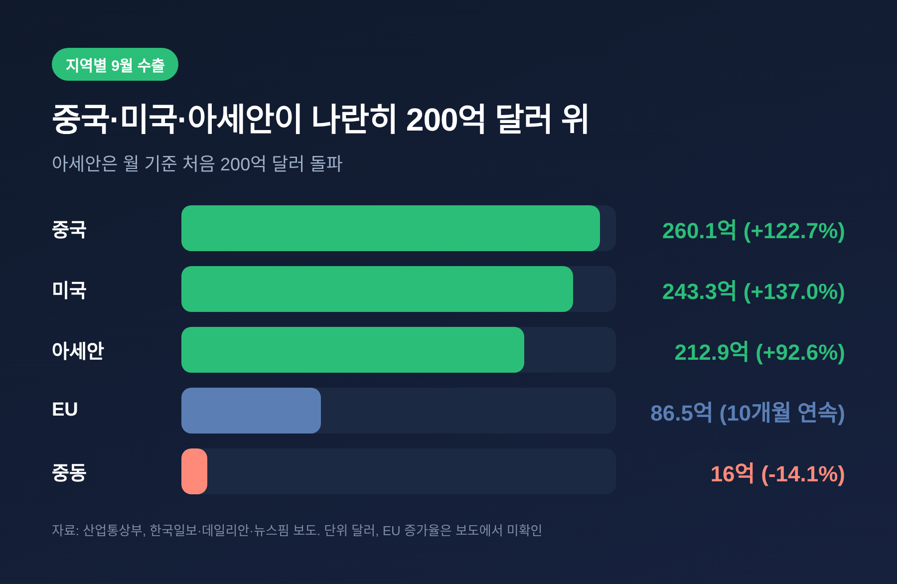
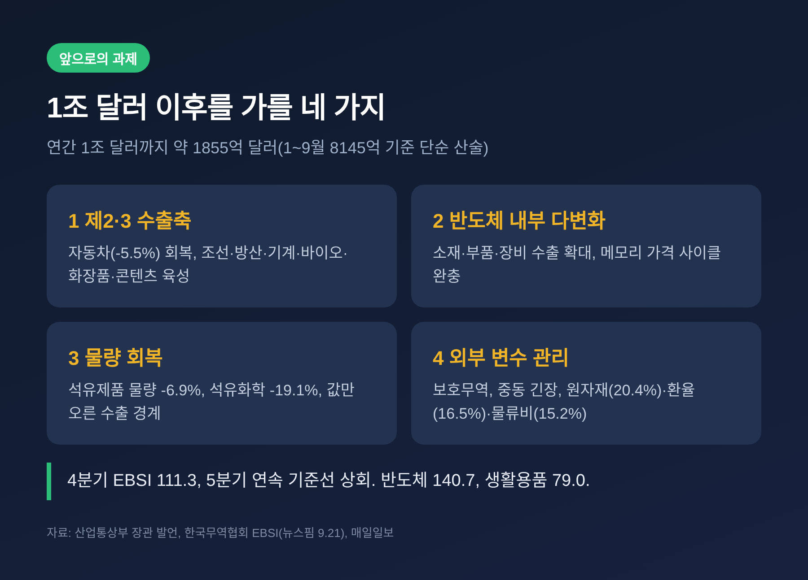

이번 글에서는 10월 1일 산업통상부가 발표한 9월 수출입동향 확정치를 정리해 보겠습니다. 9월 수출은 1209억 달러로 사상 최대였고, 반도체 수출 603억 달러가 전체의 절반 가까이를 차지했습니다. 직전 글이 관세청 1~20일 잠정치를 바탕으로 한 전망이었다면, 이번에는 확정된 결과와 품목·지역별 구조, 앞으로의 과제를 살펴봅니다.
산업통상부에 따르면 9월 수출은 1209억 4000만 달러였습니다. 1년 전보다 83.5% 늘었습니다. 월 기준으로 처음 1200억 달러를 넘겼고, 종전 최고였던 6월 약 1020억 달러도 크게 웃돌았습니다.
하루 평균 수출은 56억 3000만 달러로 105% 늘었습니다. 일평균이 50억 달러를 넘은 것도 처음입니다. 수출은 16개월 연속 증가세를 이었습니다.
누계는 더 인상적입니다. 1~9월 수출은 8145억 달러(전년 동기 대비 56.8% 증가)로, 작년 한 해 수출액 7093억 달러를 9개월 만에 넘어섰습니다. 연간 기준 사상 첫 8000억 달러 돌파이기도 합니다.
수입은 710억 9000만 달러로 26.0% 늘었습니다. 이 가운데 에너지 수입은 129억 6000만 달러로 38% 증가했습니다. 수출에서 수입을 뺀 무역수지는 498억 5000만 달러 흑자였습니다. 월 기준 처음으로 400억 달러를 넘겼고, 1~9월 누적 흑자는 2525억 달러에 이릅니다.

수출을 끌어올린 것은 반도체입니다. 9월 반도체 수출은 603억 달러로 262.8% 급증했습니다. 한 품목이 한 달에 600억 달러를 넘긴 것은 처음입니다. 직전 최고였던 8월 467억 달러를 한 달 만에 갈아치웠습니다.
비중으로 보면 약 49.9%입니다. 9월 20일까지의 잠정치에서 47.8%였던 수치가 확정치에서 절반 턱밑까지 올라왔습니다.
배경에는 AI 인프라 투자가 있습니다. 메모리 수요가 이어지면서 물량과 가격이 함께 올랐습니다. 보도에 따르면 DDR5 16Gb 고정가는 5월 37.5달러에서 9월 48.0달러로, NAND 128Gb는 26.5달러에서 30.6달러로 뛰었습니다. 메모리 수출은 358.6% 늘었습니다.
연관 품목도 폭발적이었습니다. 컴퓨터(SSD 포함) 수출은 70억 달러로 435.3% 늘어 월 기준 최대를 기록했습니다. AI 서버용 기업용 SSD 수요가 이끌었다는 설명입니다.
예전에는 반도체가 수출의 한 축이었습니다. 지금은 수출 그 자체에 가깝습니다. 매일일보가 정리한 자료로는 반도체 비중이 2024년 20.8%, 2025년 24.4%, 올해 1~8월 40.5%였습니다.

반도체와 그 주변 품목을 빼고 보면 온도 차가 뚜렷합니다. 반도체 외 수출도 23% 늘었으니 나쁜 성적은 아닙니다. 그러나 품목별로는 갈립니다.
선박은 37억 6000만 달러로 29.9% 늘었습니다. LNG선이 견인했다는 설명입니다. 무선통신기기는 21억 4000만 달러(23.4% 증가)로 11개월 연속 늘었고, 화장품은 15억 1000만 달러(31.4% 증가)로 월 기준 최대였습니다.
반면 자동차는 60억 5000만 달러로 5.5% 줄었습니다. 보도는 내연기관 판매 감소 영향을 언급했습니다. 디스플레이는 9%, 농수산식품은 4.7% 감소했습니다.
주목할 대목은 석유 관련 품목입니다. 석유제품 수출액은 72억 2000만 달러로 72.0% 늘었지만, 물량은 6.9% 줄었습니다. 석유화학도 금액은 5.1% 늘어 39억 5000만 달러였으나 물량은 19.1% 감소했습니다. 많이 팔아서 늘어난 것이 아니라 값이 올라서 늘어난 숫자라는 뜻입니다. 중동 정세에서 비롯된 가격 요인이 섞여 있다는 점은 감안해야 합니다.

지역으로 보면 쏠림은 덜합니다. 중국 수출은 260억 1000만 달러로 122.7%, 미국은 243억 3000만 달러로 137.0% 늘었습니다. 아세안은 212억 9000만 달러로 92.6% 늘면서 월 기준 처음 200억 달러를 넘었습니다.
유럽연합은 86억 5000만 달러로 10개월 연속 증가했습니다. 반면 중동은 16억 달러로 14.1% 줄었습니다. 비중은 작지만 정세가 불안한 지역에서 수출이 뒷걸음질한 점은 눈여겨볼 만합니다.
다만 이 지역별 수치에도 반도체 효과가 크게 녹아 있을 가능성이 높습니다. 보도에서는 지역별 반도체 수출액이 따로 확인되지 않았습니다. 어느 지역의 증가가 반도체 덕분인지는 추가 자료가 나와야 판단할 수 있다는 한계가 있습니다.

수출 구조가 한 품목에 기울면, 그 품목의 가격이 나라 경제의 체온을 좌우합니다. 세종대 김대종 교수는 특정 분야가 지나치게 커지면 메모리 가격과 글로벌 IT 경기 변동이 곧바로 전체 수출에 영향을 준다고 짚었습니다.
수치로 보면 이해가 쉽습니다. 반도체를 뺀 수출은 약 606억 달러(총수출에서 반도체를 뺀 단순 계산)입니다. 반도체 한 품목이 나머지 전체와 맞먹는 규모라는 말입니다.
반도체 증가율은 8월에 209%였고 비반도체는 20% 수준이었습니다. 성장 속도가 열 배 가까이 차이 나는 구조에서는, 평균을 내는 순간 반도체의 움직임이 곧 전체의 움직임이 됩니다.
이익도 마찬가지입니다. 무역수지 498억 달러 흑자는 반가운 숫자입니다. 하지만 수입이 710억 달러, 특히 에너지 수입이 38% 늘어난 점은 환율과 원자재 가격이 흔들릴 때 부담으로 돌아올 수 있습니다.
연간 수출 1조 달러는 사실상 사정권입니다. 1~9월 누계 8145억 달러에서 1조 달러까지는 약 1855억 달러가 남았습니다. 9월 수준(1209억 달러)만 유지돼도 약 1.5개월이면 채워지는 규모입니다(단순 산술). 한 매체는 11월 말에서 12월 초 달성을 점쳤습니다. 달성하면 세계에서 연간 수출 1조 달러를 넘긴 나라 가운데 하나가 됩니다.
한국무역협회의 4분기 수출산업경기전망지수(EBSI)도 111.3으로, 직전 분기보다 4.3포인트 오르며 5분기 연속 기준선 100을 넘었습니다. 반도체 140.7, 선박 138.0, 무선통신기기 134.3이 앞섰습니다. 생활용품 79.0, 섬유 80.1, 농수산물 86.5는 부진 쪽입니다.
김정관 산업통상부 장관은 1조 달러 달성이 기대된다면서도 "글로벌 보호무역주의 강화와 중동 지역의 긴장 상황은 여전히 우리 수출에 큰 변수"라고 밝혔습니다. 무역협회 조사에서 기업들이 꼽은 어려움은 원자재 가격 상승(20.4%), 환율 변동성(16.5%), 지정학에 따른 물류비 상승(15.2%) 순이었습니다.
과제는 세 가지로 정리됩니다.
첫째, 제2·3의 수출 축을 키우는 일입니다. 전문가들은 자동차, 조선, 방산, 기계, 바이오헬스, 화장품, 콘텐츠를 후보로 꼽습니다. 둘째, 반도체 내부의 다변화입니다. 소재·부품·장비 수출을 넓히고, 메모리 가격 사이클에 덜 흔들리는 체력을 길러야 합니다. 셋째, 금액이 아닌 물량의 회복입니다. 석유 관련 품목처럼 값만 오른 수출은 지속성이 약합니다.

정리하면 이렇습니다. 9월은 한국 수출이 한 달에 1209억 달러까지 올라선 기록적인 달이었고, 그 힘의 절반은 반도체에서 나왔습니다. 좋은 숫자 뒤에는 한 곳에 기댄 구조라는 숙제가 함께 있습니다.
— 기록은 반도체가 썼지만, 그 기록을 지키는 일은 나머지 산업의 몫입니다.
수출 1조 달러라는 이정표를 지나고 난 뒤에 무엇이 남을지는, 올해 4분기보다 내년 이맘때에 더 분명해질 것입니다.
본 글은 산업통상부 발표 및 언론 보도를 정리한 정보 제공 목적의 해설이며, 특정 종목이나 자산에 대한 투자 권유가 아닙니다. 투자 판단과 그에 따른 책임은 투자자 본인에게 있습니다. 일부 수치는 보도 간 차이가 있을 수 있으며, 정확한 수치는 산업통상부 공식 자료를 확인하시기 바랍니다.